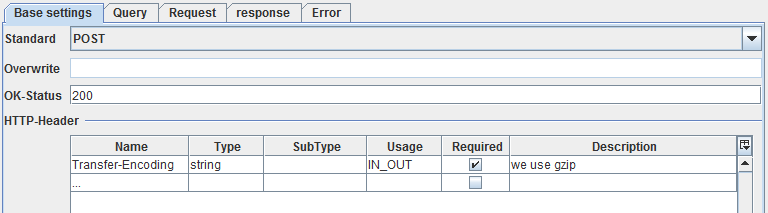
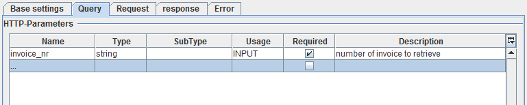
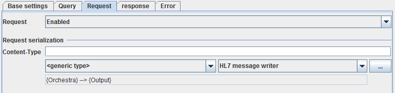
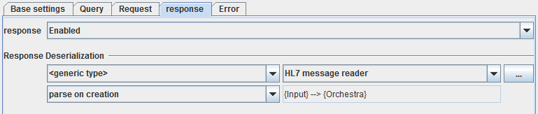
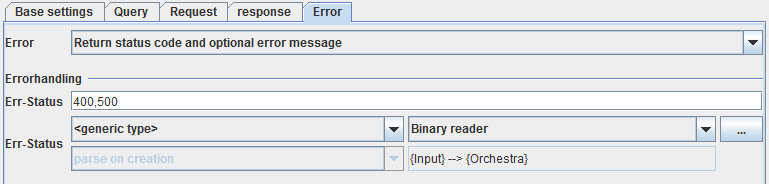

HTTP Caller

Topic content
Description
This channel allows to invoke any HTTP method. You may provide any Message content, Query parameters and HTTP-Headers. You also may parse response message content and error message content. Of course not all of this is sensible with all of the HTTP methods. E.g. Query parameters are only usable with GET and POST calls and a request content is not allowed in GET calls.
Purpose of object
Use this channel if the specialized channels like HTTP Post Sender or HTTP Sender (Parameter) are not appropriate. E.g. the HTTP Post Sender parses the error content only if the Status code is 500.
Since Orchestra Version
Introduced in version 4.3.3.0
Configuration
The dialog to configure the HTTP Caller looks like:
Dialog to edit the HTTP Caller channel
Step by Step
•Endpoint Here you may select Static endpoint or Dynamic endpoint. If Dynamic endpoint is selected, the channel has a parameter ctrl_endpoint. The caller has to provide the actual URL as value of this parameter. In this case the URL defined in the is not used; If a Proxy server is defined in the this proxy is used even if Dynamic endpoint is selected.
•Service-URL Here an Environment Entry of type Uniform resource locator is selected. It contains the URL to call if Static endpoint is selected. If in the Environment entry a Proxy server is defined it is used even if Dynamic endpoint is selected.
•Connect-Timeout Sets a specified timeout value, to be used when opening the HTTP connection. If the timeout expires before the connection can be established, an error is raised. A timeout of zero is interpreted as an infinite timeout.
•Read-Timeout Sets the read timeout. A non-zero value specifies the timeout when reading the HTTP response. If the timeout expires before there is data available for read, an error is raised. A timeout of zero is interpreted as an infinite timeout.
•Security
•Authentication here you may select an authentication type. You can select one of No authorization required or Username/Password or Use preemptive authorization (Username/Password) or Use certificate authorization. If you selected Use certificate authorization then the selected user credential must have PKCS#12 Key Pair. See Credentials for more information about user credentials, and key pairs. See also the best practice story Web Service Security in SOAP web service calls for more information about how to import a Key Pair.
•User-Credentials a user credential of type Technical login. If you work with No authorization required you need no selection here.

In the combo box you need to select a Therefore create a Credential of type technical login and add a public/private keypair in pkcs#12-format.
Optionally, if you want to check server credentials, you should select a Therefore create Credentials of type trusted server and add a public key certificate.
Enforcing specific to be used in TLS is possible simply by adding comma separated values in the text box(e.g. "TLS_ECDH_RSA_WITH_AES_256_CBC_SHA,TLS_ECDHE_RSA_WITH_AES_256_CBC_SHA,TLS_DHE_RSA_WITH_AES_256_CBC_SHA").

Also, you can enforce certificate chain and validity check by selecting chain and boxes.
•Detail settings
In the tabulator panels under Detail settings you have to configure the parts of a HTTP communication.
In this panel the most basic settings of a HTTP call are to be configured.

•Standard In this box you must select a HTTP method. The methods GET, POST, PUT, HEAD, DELETE, OPTIONS, TRACE and <user defined> are selectable.
If the method <user defined> is selected the field Overwrite is enabled and you can enter your own method name here.
•Ok-Status This field contains a comma separated list of codes representing success status. If the HTTP response has the status code 200 or a code contained in this list then the response is handled as defined in the response tab.
•HTTP-Header In this list you can add additional HTTP header fields for the HTTP header. If you add an entry in this list having a name X then a channel parameter named HDR_X is generated. The value of this parameter then is set as value of the HTTP header X into the header of the HTTP request.
Query
In this panel you may add query parameters for a GET or a POST call.

In this list you can add query parameters of the HTTP call. Typically query parameters are used in GET and sometimes in POST or PUT calls.
If you add an entry in this list having a name X then a channel parameter named QRY_X is generated. The value of this parameter then is added as query parameter X=value to the URL of the HTTP request.
E.g. if you have a parameter invoice_nr and the static URL http://test.soffico.de/invoices the channel gets a parameter QRY_invoice_nr. If you assign the value 1234 to this parameter and call the channel this results in a new URL http://test.soffico.de/invoices?invoice_nr=1234 which then is transfered to the server.
Request
In this panel you may define if and how a request content is sent in the HTTP call. Typically this is used together with a POST or a PUT call.

If the field is set to Enabled the channel gets in input parameter MSG of type Message. The message is then serialized using the selected Serializer and the resulting byte stream is written as HTTP message content to the server. In most cases the XML writer is used.
response
In this panel you may define if a response content is received as part of the HTTP response and how it is parsed. Typically this is used together with a GET or a POST call.

If the field is set to Enabled the content of the HTTP response is parsed by the selected Deserializer. In most cases the XML reader is used expecting XML content. The resulting Message is then returned as value of the output variable MSG.
There are two parsing modes parse on creation (the default) and parse on demand.
•parse on creation - the data are parsed by the selected deserializers while reading the byte stream. If in this process an error occurs, it is visible only in the log file because no process instance exists yet.
•parse on demand - the byte stream is read binary without interpreting it; together with the data the configuration of the selected deserializer is stored. If the message is accessed, e.g. by a mapping, it is parsed using the attached deserializer configuration. If the deserializer throws an error it can be handled by from the process instance.
Error
If a HTTP call returns an error it may send an error content, e.g. a HTML page describing the error. In this panel you may define if an error content is received and and how it is parsed.

•Error from this box you can select two modes Generate exception on error and Return status code and optional error message:
oIf Generate exception on error is selected the caller of the channel receives an error if a status code is received which is not a success code. Success codes are 200 and all codes contained in the Ok-Status field in the Base settings .
oIf Return status code and optional error message is selected and the status code is not a success code the status code is returns as value of the output variable HTTP_STATUS and a short string describing the code (like "Not found") is returned as value of the output variable HTTP_MESSAGE. If the status code is contained in the field Err-Status the error content of the response is parsed with the configured deserializer. Typically the error content contains a HTML page describing the error. Therefore the Binary reader is most appropriate in this case.
•Err-Status here you may enter a comma separated list of status codes. The error content is only parsed using the configured deserializer if this field contains the status code. The result of parsing the error content is a Message which is returned as value of the output variable MSG.
See also
For special cases of HTTP invocations use the channels HTTP Sender (Parameter) and HTTP Post Sender.
To accept HTTP invocations you can use the channels HTTP GET Receiver, HTTP POST Receiver (General) and HTTP POST Receiver (Parameter).
A more general approach to call a remote service using HTTP is the REST Service Client. It is also more flexible in creating and interpreting the message content.
You also can implement a HTTP server with the REST Service Provider.